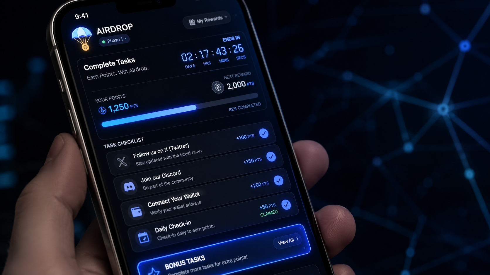
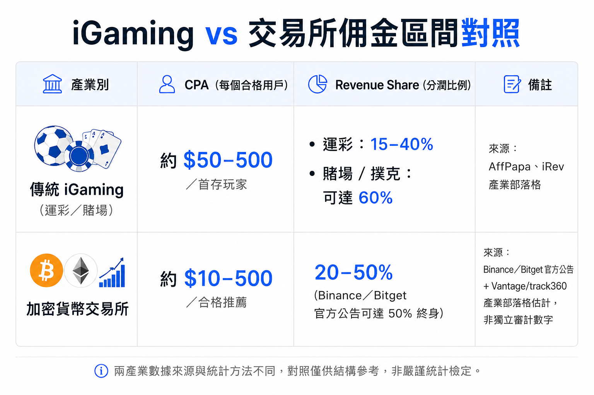
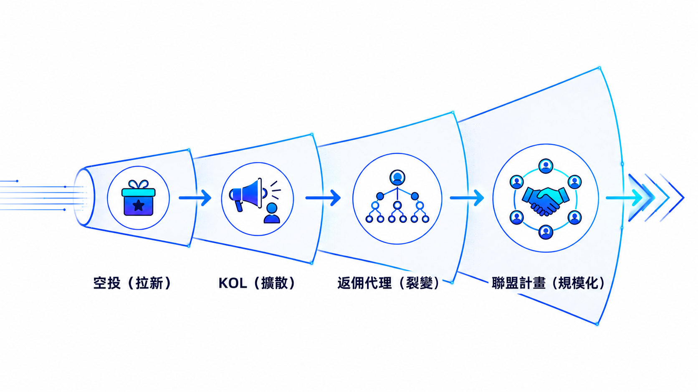

交易所行銷手法全拆解：他們到底在買你的什麼
空投、KOL、返佣代理、聯盟計畫——每一個你以為是「福利」的東西，其實都是精算過的獲客機器。行銷人角度拆開來看，附真實數字與案例。

每一套交易所行銷手法最會偽裝的地方，就是把「算計」包裝成「福利」。剛轉職進幣圈的人，晚上常窩在筆電前狂點滑鼠——簽到、按讚、轉發、進 Discord 喊「gm」，動作行雲流水像在打卡上班，他們把這件事叫「擼空投，晚做等於少領」。這種用任務吊著你、用倒數計時逼你上線的設計，眼熟得很——它跟賭場的免費籌碼、百貨的開卡禮走的是同一條路，只是配色換成了霓虹藍。
交易所行銷手法都在賣什麼？先從空投拆起
先講答案：空投從來不是免費發錢，是交易所用代幣換你的注意力跟行為。完成任務、留下錢包地址、跑出一串鏈上紀錄，這些才是他們真正要的漁獲——代幣只是誘餌。
2024 年 11 月底，CoinDesk 報導Hyperliquid 一口氣空投 3.1 億顆 HYPE 給 94,000 個地址，官方喊出總價值約 16 億美元，聽起來像天上掉錢。但攤開分佈才發現，DL News 的分析指出，56.6% 的地址實拿不到 100 顆——峰值均攤數字很唬人，中位數才是真相。真正吃到肉的是早期就在平台狂刷交易量的重度用戶，不是隨手點兩下的路人。
Arbitrum 的教訓更直白。2023 年 3 月 23 日空投當天，CoinDesk 記錄首小時就有 23,000 個錢包（僅佔合格地址的 3%）領走 4,200 萬顆 ARB，領完直接轉去交易所，短時間內拉出約 25% 的拋壓修正。空投拉來了一波流量，卻沒留住半個人——這才是多數專案真正該怕的事。
交易所當然知道這個漏洞，於是開始玩「抓女巫」。DL News 報導提到，Linea 空投裡 130 萬個合格地址中約四成被判定為用多錢包刷任務的「女巫」而剔除資格；Hop Protocol 更狠，直接開放社群檢舉、抽成被抓包代幣的 25% 當獎金，最初 43,058 個合格地址裡有近兩成四因此出局。拉新跟防作弊，變成一場軍備競賽。
這套邏輯一點都不新——先塞一筆看得到、摸得到的「見面禮」把人拉進門，不管他會不會留下來，重點是先讓他踏進來完成一次動作。免費籌碼、開卡禮、首購折扣，本質都一樣：先製造一次行為，忠誠度是後面才煩惱的事。
幣圈 KOL 行銷怎麼運作？跟你想的「業配」不太一樣
先講答案：現在主流玩法不是直接付錢喊單，是讓 KOL 用折扣價「投資」代幣、換宣傳義務。包裝成「他真心看好」，本質是一場沒有揭露的業配，還附帶比你早解鎖的特權。
CoinDesk 在 2024 年 5 月的深度報導拆過這套「KOL 輪」怎麼玩：Humanity Protocol 在 2024 年 3 月募了 150 萬美元天使輪，參與的 KOL 得履行義務——每週固定按讚評論三則推文、寫串文、上 Twitter Space；另一個案例 Creator.Bid 讓 KOL 在空投當天就能解鎖 23% 的代幣額度，比一般用戶快得多。報導也點名 BitBoy Crypto（Ben Armstrong）過去單次業配收費高達數萬美元。這些安排通常不會告訴正在滑手機的你，眼前這則推文其實是投資人在推銷自己的持倉。
不揭露這件事在美國是玩真的。2022 年，SEC 對 Kim Kardashian 開罰，理由是她收了 25 萬美元卻沒揭露就在 Instagram 推廣 EthereumMax，最後付出 126 萬美元和解金。KOL 賺業配費不是問題，沒講清楚才是問題。
中文圈也有活教材：KOL 跟交易所表面上是合作，翻臉起來誰先倒貨、誰先斷腕，比宮鬥劇還精彩。
鏈新聞 2023 年 8 月的報導提到，KOL Evan Luthra 從 2022 年 10 月起擔任 ReelStar 項目顧問，代幣 REELT 於 2023 年 3 月 23 日在 Bitget 上架後隨即從 0.07 崩到 0.028 USDT，Bitget 認定顧問跟做市商「只賣不買」異常倒貨，直接凍結帳戶；Luthra 反過來提告 Bitget，求償 1,600 萬美元。
KOL 經濟也延伸到線下。2025 年 4 月的另一篇報導爆料 Bybit 進校園辦活動、發合約體驗金吸引學生交易，並被指控對每個上架項目收取高達 140 萬美元上幣費；Bitget 的校園大使計畫則澄清「從未鼓勵合約交易」。不管哪一邊說的是真話，這套「找有影響力的人幫你把話傳出去」的邏輯，跟業配網紅、跟直播主帶你去開戶入金，骨子裡是同一件事——差別只在包裝成「投資人」還是「大使」聽起來比較好看。
交易所返佣代理怎麼分潤？跟你以為的「省手續費」不一樣
先講答案：返佣本質是交易所把手續費收入切一塊出去買流量。你以為自己在省錢，其實是在幫交易所付獲客成本——而且你上面通常還有一層代理，正在抽你這條線的成長。
數字攤開來看：Binance 2025 年 7 月的官方公告把聯盟計畫佣金拉到最高 50%、無時間上限，期貨聯盟另外從 2025 年 8 月起分層計算。Bitget 官網目前顯示（查詢於 2026 年 7 月，屬平台自報數字、非第三方查核）返利比例 40% 起、最高 50%，超過 30 萬名聯盟夥伴，過去 30 天合計賺進 2,000 萬 USDT 佣金，申請門檻只要粉絲數 100 人以上或社群 500 人以上就能加入。門檻低、分潤高、終身有效、不用自己囤幣壓本金——這套設計不是為了讓你隨便試試，是為了讓你有動力去拉更多人下線。
這套多層代理結構其實有原型。攤開博弈業的代理合約，骨架幾乎是同一份範本：上面一層負責拉人、下面一層負責養客，分潤按等級往上疊、終身有效、不需要自己壓本金——差別只在賭桌籌碼換成了交易所手續費。監管越嚴、越靠人性弱點轉換的產業，越容易長出這種代理層級；不是幣圈發明了它，是幣圈剛好也需要它。

交易所聯盟計畫又是什麼？跟返佣差在哪
先講答案：聯盟計畫是把返佣機制外包給規模更大的「通路商」去做。內容站、YouTuber、比較評測網站都是通路——本質是一種 CPA／RevShare 混合的效果型廣告採購。
業界（聯盟行銷媒合平台自身內容，屬產業估計、非獨立審計數字）大致落在：CPA 每個合格推薦約 $10–500，門檻通常是完成 KYC 或最低入金；RevShare 則是手續費分潤 20–50%，部分平台祭出終身分潤搶通路商；混合制則是簽約先發一筆小額 CPA，再疊加後續分潤。這套組合拳在傳統廣告代理圈是家常便飯——中小企業砸錢找部落客業配，算的也是同一套 CPA 加分潤邏輯，只是這次的「產品」換成了交易所帳戶。
交易所買你的注意力，不是只靠 KOL 跟返佣代理這種「近身戰」，也砸大錢做品牌型贊助——交易所砸錢贊助 MotoGP走的就是同一套「買注意力」邏輯，只是換了個更貴、更慢熱的戰場。

回到開頭那個畫面——那些在 Discord 裡打卡簽到的人，其實都在同一台機器裡跑，只是很少人退一步看清楚它的全貌。這套機器一點都不新：拉新用免費籌碼、擴散用業配網紅、裂變用代理分潤、規模化用聯盟通路，每一顆螺絲都是別的產業用了幾十年的老招。完整的交易所行銷手法，說穿了就是把它們重新組裝一次，配色換成霓虹藍而已。
如果你也對這台機器背後在找什麼樣的人感興趣，我之前寫過幣圈行銷職缺到底在做什麼，兩篇對照著看，大概就懂這行的全貌了。
文中金額、比例、用戶數等數據皆標註來源與查詢時間，幣圈變化快，實際數字請以各平台當下公告為準；部分交易所自報數據（如 Bitget 聯盟計畫）未經第三方查核，僅供參考。本文為觀點與案例整理，非投資建議。
參考來源
- CoinDesk: Crypto Exchange HyperLiquid Announces Native Asset HYPE, Users to Receive 310M Tokens，2024-11-28
- DL News: Hyperliquid airdrop farming drives 84% token surge
- CoinDesk: Arbitrum Users Claim 42M ARB Tokens in First Hour of Airdrop，2023-03-23
- DL News: 'Sybil attackers' raid airdrops for millions with bogus wallets
- CoinDesk: Influencer-Investors Get Perks to Pitch Tokens: Inside Crypto's 'KOL' Economy，2024-05-09
- SEC.gov: SEC Charges Kim Kardashian for Unlawfully Touting Crypto Security，2022-10-03
- 鏈新聞 ABMedia：Bitget稱KOL惡意倒貨予以凍結帳戶，KOL提告求償一千六百萬美元，2023-08-07
- 鏈新聞 ABMedia：Bybit、Bitget 觸手伸向大學？謝家印及 0xU 及浙大鏈協聲明校園活動未鼓勵交易，2025-04-14
- Binance 官方公告：Binance Updates Referral and Affiliate Program with Enhanced Commission Rates，2025-07-21
- Bitget 官方聯盟計畫頁面（即時數據，平台自報、非第三方查核），查詢於 2026-07-19
- AffPapa: iGaming Commissions Explained: CPA, RevShare, Hybrid, Fixed
- iRev: Affiliate Payout Models in Online Gambling: CPA vs. Revenue Share
- Vantage Markets Partners: CPA vs Revshare: Comparison for Crypto Affiliates（產業部落格估計數字，非獨立審計）